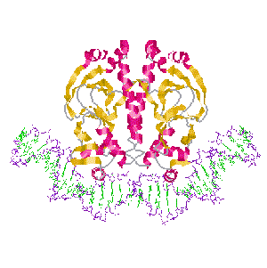

In Search Of


Precise Drug Candidates
There exists two main problems within the current approaches outlined that still remains unaddressed.
Specific types of PWMs are known to overstimate the importance of the different bases in a motif, likely due to an unequal number of sub-sequeneces (known as k-mers). This leads to a much higher number of false positives.
Additionally, PWMs are an archaic method of finding motifs, having been orignally discovered over 30 years ago. New methods which utilize the increasing compute power, as well as abundance of genomic data are invaluable.
SMILES strings, the type of chemical representation used to train most language models, miss key information such as the prescence of entiomers. They also do not natively represent molecules and their bonds, using characters such as brackets to signify them instead. In the past year, transformer architectures have emerged as incredibly strong at learning from text as well, which shows the potiential for using models such as BERT or GPT-2 over the RNN-LSTM models of the past.
Using convolutional neural networks to understand transcription-factor binding patterns in A549 lung epithelial cells. Using one-hot encoded ChIP-seq data which gives us signals for binding strength across an entire genome, the model is able to learn motifs, or potentially disease-causing regulatory variants that can negatively impact gene-expression.
The model is able to achieve an accuracy of 90.5%, surpassing traditional approaches which use Position Weight Matrices (PWMs) models by nearly 20%. Last October, I gave a talk on using CNNs for learning TF-binding patterns at the Re-Work Deep Learning Summit in Montreal. Check it out here.
Using graph convolutional networks, reinforcement learning, and transformers to learn + generate molecules. Project De Novo is working on creating implementations of two different approaches. The first one uses a convolutional network based model for goal-directed graph generation through reinforcement learning, based on research from the Pande Lab. The second approach uses transformers, an emerging and widely successful language model, to generate SMILES strings.

Purpose: The implications of a model which can learn transcription factor binding patterns are huge; clinical trials suggest mutations in genes which bind to transcription factors are known to cause forms of breast and lung cancers, as well as rare neurological diseases such as Rhett Syndrome.
On the other hand, a robust RL network that can generate molecular graphs has the potiential to create more native representations of molecules, increasing the validity of the molecules generated.
Method: Phase 1 (finding motifs), will involve the use of a CNN network to learn from one-hot encoded genomic data. Pre-trained CNNs are then used to visualize motif sequenece maps using Kipoi. Phase 2 (generating molecules) is currently focusing on testing both the use of transformers compared to molecular graphs in generating more valid drug candidates. In the next 1-2 months, the method to continue forward with will be finalized.
For more specific research details download the whitepaper to look at the specifics of the project.
In order to help researchers acclerate the process of discoverying motifs + generating molecules for a specific dataset, our deep learning library is a straight out of the box approach that can help researchers write, execute, train, and deploy valuble learning algorithms for communication analysis and intelligence detection. Just fork the repo, load your dataset, and you're good to go.
This library will include, but is not limited to:
Currently the project is still under construction. Contact us for more info and updates on the project!